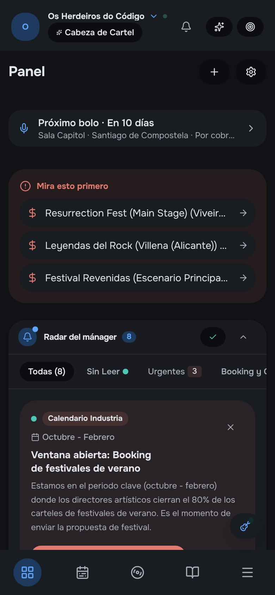
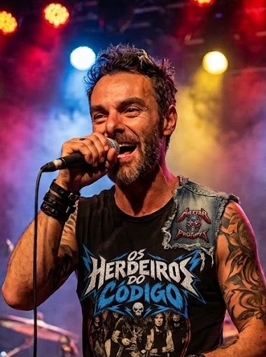
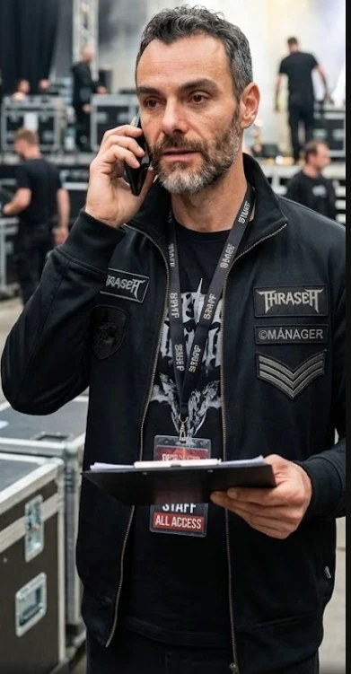
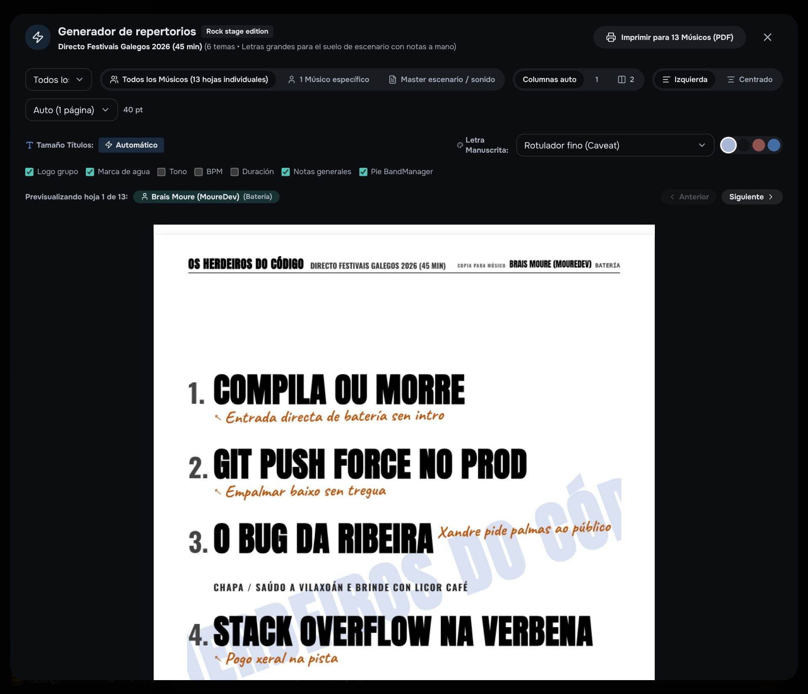

TFM · Máster de Desarrollo con IA The Big School by Brais Moure
Pensada para pantalla grande: F para pantalla completa · M para el sonido
Jueves · 23:47 · Grupo de WhatsApp
¿Alguien ha contestado a la sala?
23:58
Así no llegamos a ningún lado.
Sin respuesta de las salasSin repertorioSin fechas
00:03 · Iago · bajo
Dadme hasta el sábado.
Booking
Calendario
Setlists
Correos con IA
Menos gestión, más música.
TFM · Máster de Desarrollo con IA · The Big School by Brais MourePulsa → para empezar
Sonido: pulsa M
BandManager.io
Menos gestión, más música.
Buscar salas, cerrar fechas, ensayar, tocar y cobrar sin saltar entre diez herramientas distintas. Eso es BandManager.
TFM · Máster de Desarrollo con IA · The Big School by Brais Moure Diego de la Calle · Octubre de 2026

Prólogo · Os Herdeiros do Código
Una banda de amigos.
BraisBateríaXandreVoz y guitarraÁlvaroGuitarra solistaIagoBajo
Prólogo · Os Herdeiros do Código
Un jueves cualquiera, a las 23:47.
Xandre · voz 23:47¿Alguien ha contestado a la sala del 14?
Álvaro · guitarra 23:52Llevamos tres ensayos sin saber qué tocamos.
Brais · batería 23:58Así no llegamos a ningún lado.
Iago · bajo 00:03Dadme hasta el sábado.
Prólogo · Así se gestionaba
Seis meses de booking en un Excel.
bolos_2026_DEF_v7(1).xlsx
Enviado
Respuesta
Fecha
Sala del puerto
12 mar
sin respuesta
-
Festival de verano
14 mar
sin respuesta
-
Sala del casco viejo
02 abr
"No tenemos hueco"
-
Bar de la plaza
20 abr
leído, sin respuesta
-
Setlist_v7_FINAL_def2
¿cuál es la buena?
Prólogo · Mientras tanto
Iago se había apuntado a un máster.
TBS
Máster de Desarrollo con IAThe Big School by Brais Moure
Requisito para acabarUn Trabajo Fin de Máster
La pregunta de Iago¿Y si el proyecto fuera lo que mi banda necesita?
Con quién lo hablóCon Claudio y Guglio, dos asistentes de IA, revisando cada respuesta.
Y esta parte es cierta: esta presentación es un TFM de ese máster.
Prólogo · Miércoles, 22:10
Iago tiene algo que enseñar.
Iago · bajo 22:10Chicos, el sábado a las 11 en el local. Tengo que enseñaros algo que ni yo me creo que haya hecho solo.
Xandre · voz 22:14¿De qué va? ¿Qué es??
Álvaro · guitarra 22:19Seguro que ha encontrado una base de datos con todas las salas de Galicia.
Brais · batería 22:31O ha descubierto Google Calendar.
Iago · bajo 22:33Sábado a las 11. Traed unas birras y os cuento.
Prólogo · Sábado, 11:00 · El local de ensayo
Iago lo enseña en el local.
Iago · bajoEsto es BandManager. Os cuento qué hace por cada uno.
Brais
Xandre
Álvaro
Brais · bateríaA ver, enséñanos eso que ni tú te crees.
I
Capítulo 1 de 4 · Conseguir el bolo
Primero, las salas.
Buscar, escribir y cerrar fechas sin perseguir a nadie.
Iago · bajoMirad esto. Todo empieza aquí.
Conseguir el bolo
Todas las salas y festivales, en un solo sitio.
Buscas, guardas y haces seguimiento sin salir de aquí.
Xandre · voz¡¿Esto lo has hecho tú?!Iago · bajoCon un poco de ayuda.
Conseguir el bolo
La IA escribe a las salas. Tú das el visto bueno.
Cada correo suena a tu banda, y nada sale sin tu permiso.
Álvaro · guitarra¡Me ha escrito a tres salas mientras hablábamos!
Conseguir el bolo
Dos bandas, dos ciudades, una fecha cada una.
Date Swap propone cambiar fecha con otra banda y tocar en su ciudad. Así conocimos a Master of Prompts.

Master of PromptsSu cantante nos escribió por Date Swap
Brais · batería¡Cartel doble con otra banda! ¡Esto no lo tiene nadie!
Interludio · Una semana después
La sala contestó. Por fin.
Sala El Faro · A Coruña Re: Os Herdeiros do Código · propuesta de fecha
Nos encaja el sábado 14 de noviembre. Mandadnos el dossier y la setlist.

ManagerOs Herdeiros do Código · antes, cantante de Master of Prompts
II
Capítulo 2 de 4 · Antes del concierto
Ahora, la música.
Cada uno con lo suyo, sin repartir hojas ni perder acordes.
Iago · bajoEsto os va a gustar a cada uno.
Antes del concierto
Cada músico, su hoja.
Con su nota, y el tono y el BPM solo en los temas donde los quiere.

Brais · batería¡Mi hoja! ¡Con mis notas, solo mías!
Antes del concierto
Los acordes pasan solos.
Das al play y el atril cambia con la canción.
Álvaro · guitarra¡Se mueven solos! ¡Hasta yo me entero!
Antes del concierto
Una canción entra, cada instrumento sale.
Iris separa voz, batería, bajo y guitarras para ensayar encima.
Xandre · voz¡Mi voz sola! ¡Nunca me había oído así!Iago · bajoY puedes ensayar cantando encima.
Antes del concierto
Ensayos y bolos, en un calendario.
Y la ficha de cada fecha, con la meteo y los puentes.
Brais · batería¡Por fin sé cuándo ensayamos y cuándo tocamos!
III
Capítulo 3 de 4 · Que te conozcan
Que nos conozcan.
Un dossier, un QR y un vídeo para que la gente nos siga.
Iago · bajo¡Y ahora, que nos conozca más gente!
Que te conozcan
El dossier de la banda, siempre al día.
Una página pública con fotos, formación y contacto de booking.
Álvaro · guitarra¡Parecemos una banda de verdad!
Que te conozcan
Un QR, y el público se hace fan.
Se apuntan desde el móvil y tú captas fans para financiar la gira.
Xandre · voz¡Se apuntan solos desde el móvil!
Que te conozcan
Del directo al reel, sin editar.
La IA corta los mejores momentos y escribe el texto con la voz de la banda.
Brais · batería¡Salgo en un reel sin hacer nada!
Interludio · Un año después
Y entonces llegó el festival.
Resurrección Fest
Os Herdeiros do Código
Escenario principal · Viveiro
Interludio · En antena
Rock FM · en directo
La banda que casi se separa por problemas de gestión interna acaba tocando en el Resurrección Fest gracias a bandmanager.io
IV
Capítulo 4 de 4 · Después del concierto
Y al final, las cuentas.
Cuánto entra, cuánto sale y cuánto queda para la banda.
Iago · bajoLo último, para que nadie se pelee.
Después del concierto
Cuánto entra y cuánto queda.
Gira, cobros y gastos de la banda en una sola pantalla.
Álvaro · guitarra¡Por fin sé cuánto queda! ¡Y salen números positivos!
Sábado, 13:00 · El local de ensayo
Lo han visto todo.
Álvaro · guitarra¡¿Pero cuándo has hecho esto?! ¡Si tienes trabajo y dos hijas!
Xandre · voz¡Eres un genio, Iago!
Iago · bajoPor las noches, con Claudio y Guglio.
Brais
Xandre
Álvaro
Iago
Interludio · Un jueves, a las 23:47
El grupo seguía existiendo.
Xandre · voz 23:47¿Alguien ha contestado a la sala del 14?
Iago · bajo 23:48Ya está confirmada. Mirad el calendario.
Álvaro · guitarra 23:49Y la setlist de cada uno ya está en la hoja.
Brais · batería 23:51Entonces ensayamos el sábado.
Fin de la historia · Diego de la CalleDiego de la CalleEl bajista
El bajista soy yo. La aplicación es real.
En la banda de la demo el bajo se llama Iago. En esta historia, el bajista soy yo. La banda es una metáfora: nadie saca adelante un proyecto solo. Lo que has visto funcionando existe y está en el repositorio. Ahora toca lo que no sale en los carteles: cómo se sostiene.
V
Para el tribunal
Y ahora, cómo se sostiene.
El negocio y la técnica detrás de lo que habéis visto.
DiegoHasta aquí, la banda. Ahora, el tribunal.
Marketing · Público
Quien toca y quien programa.
Quien toca, y paga
El líder multitarea
Una banda DIY con una sola persona de booker, tour manager y contable. Es el cliente central.
La solista emergente
Sin equipo. Necesita un dossier que impresione y contenido para redes.
El músico de sesión
Toca en varias bandas y quiere un calendario sin solapes.
El manager boutique
Lleva de tres a ocho bandas y necesita control de cada una.
Quien programa, y decide
Salas
Quieren llenar la barra y evitar el plantón. Piden fecha, modelo económico y dossier.
Festivales
Reciben cientos de propuestas. Ganan las que llegan completas y a tiempo.
Ayuntamientos
Contratan para fiestas y plazas. Piden factura, puntualidad y papeles en regla.
Productoras
Montan carteles y giras. Buscan bandas fiables y fáciles de coordinar.
Quien toca paga. Quien programa hace que el producto funcione: si trabajar con nosotros es fácil, contestan antes.
Negocio
Dos motores: la suscripción y la comisión por bolo.
Construido, desactivado a propósito
Suscripción por banda
Cinco planes, de 0 a 79 € al mes. La banda paga una cuota y todos sus miembros comparten espacio e IA. El texto de los agentes es ilimitado con uso justo. El cómputo pesado, como los reels y los stems, va por cupos.
Calculada, pendiente de cobrar
Comisión del 5 % por bolo
Cuando una sala paga el caché o la señal de un acuerdo a través de la plataforma, nos quedamos el 5 %. Se calcula y se guarda en cada acuerdo, pero hoy no se cobra.
La suscripción paga la herramienta. La comisión alinea nuestro éxito con el de la banda: solo ganamos si ella toca y cobra.
Negocio · Suscripciones
De gratis a 79 € al mes, según lo que necesite la banda.
Plan
Precio
Créditos IA al mes
Para qué
Promo / Promo+
0 €
0
Dossier, QR, fans, calendario y repertorio
Ensayo
0 €
100
Primer contacto con booking y agentes
Local
15 €
300
Booking con 50 leads y contactos de medios
De Gira
29 €
800
Todo ilimitado en una banda, Tour Manager y Reels
Cabeza de Cartel
79 €
2.500
Hasta 5 bandas, finanzas y agentes en paralelo
Los límites se validan en el servidor, no solo en la interfaz. Los planes de pago están desactivados a propósito mientras valido el producto, así que toda banda nueva entra en modo promo.
Negocio · Márgenes
La IA de texto cuesta céntimos: sin taxímetro.
0,28 €coste de servidores de una banda ultra activa en un mes (estimación)
15 €cuota del plan Local
98 %margen bruto en ese peor escenario
80acciones de texto cada 5 horas por banda en el plan Local, como uso justo
Ilimitado buscar salas y redactar pitches y copys · Por cupo los reels y la separación de pistas, que gastan GPU y CPU de verdad, acotados por duración, caché y un render a la vez.
Cómo está hecho
Un monolito sensato, con la IA en los bordes.
Frontend
React 19 + Vite SPA
Tailwind CSS v4 sistema Espectro
Motion animación
Tone.js · wavesurfer audio
PWA instalable
Backend · Express 4 + TypeScript
Rutas por dominio39 ficheros
Servicios de agentesScout · Enviador · Lector
Cola y planificadoragent_jobs_queue
Aislamiento por bandagetTargetBandId
Estado en memoriasincronizado con Supabase
Servicios
Supabase PostgreSQL + Storage
Gemini DeepSeek y OpenAI opcionales
Gmail OAuth2 · IMAP correo de cada banda
Stripe · Resend planes y avisos
Railway · Sentry despliegue y errores
Supabase es la única fuente de verdad. Cada integración se desactiva sola si falta su clave: sin .env la app arranca igual, con usuarios semilla y estado en memoria.
Cómo se construyó
Construido con IA y gobernado por reglas.
AGENTS.md es el contrato
Arquitectura, seguridad y reglas de negocio que cualquier agente de código lee antes de tocar nada. Manda sobre las convenciones genéricas.
Skills y hooks
21 skills, espejadas para Claude Code, Gemini, Cursor y Open Code, y un hook que avisa de /security-review cuando se toca una zona sensible.
Reglas que se comprueban
Un test estático rompe el build si vuelve el patrón inseguro de band_id, y un script comprueba en CI que cada ruta citada en la documentación existe.
AGENTS.md · no negociable
1. Ningún dato de una banda
visible para otra.
2. Ningún email automatizado
sin aprobación humana
explícita.
3. Cero errores nuevos de
TypeScript sobre el
baseline de CI.
Cómo se protege
Defensa por capas: ninguna es la única barrera.
Aislamiento por banda
La banda se resuelve en el servidor a partir de la sesión, nunca de lo que manda el cliente. Un test estático lo vigila en cada CI.
Inyección de prompt
Lo que llega de webs y de emails de salas se sanea y se marca como dato, no como orden. La última barrera sigue siendo una persona.
SSRF y abuso
Todo fetch a una URL de usuario valida la IP y bloquea rangos privados. Hay limitadores de ritmo en login, IA, render y pagos.
Autenticación
Contraseñas con PBKDF2-SHA512, login con Google verificado en servidor y sesiones que caducan.
Obra del músico
Las maquetas y los stems cuelgan de una ruta por banda en Storage, sin URLs predecibles ni acceso para quien no pertenezca a ella.
Errores en producción
Los fallos de negocio van a un panel propio y lo inesperado, a Sentry, con la versión que lo produjo.
Calidad
Un producto con tests de verdad.
271klíneas de TypeScript, entre cliente y servidor
295rutas de API declaradas
51tablas en PostgreSQL, con 33 migraciones SQL
1857tests unitarios en verde, en 208 archivos, además de E2E y regresión visual
En cada commit Husky y lint-staged · En cada push typecheck, ESLint, unitarios y E2E · En producción healthcheck, reinicio automático y Sentry. Medido en el repositorio el 8 de octubre de 2026.
Honestidad técnica
Lo que sé que falta, a la vista.
Bloqueantes antes de producción
Exigir titularidad en las descargas de vídeo de YouTube y añadir la baja a los emails comerciales de los agentes.
Límites de seguridad conocidos
Las políticas RLS de Supabase son permisivas y el aislamiento lo hace la aplicación. No hay Content-Security-Policy y el limitador de ritmo vive en memoria.
Por medir
El detector de acordes aún no se ha probado con canciones reales. Su cifra de acierto está escrita a mano.
La IA acelera el código, pero la responsabilidad legal, de seguridad y de producto es de quien firma el proyecto. Por eso lo que falta está escrito en el repositorio.
Siguientes pasos
De proyecto de máster a banda real.
1
Probarlo con una banda real
El flujo entero: lead, aprobación, borrador en Gmail y respuesta de la sala.
2
Reactivar el cobro
Cerrar los arreglos de facturación y abrir los planes de pago.
3
Vídeos de fans por QR
Que el público suba su clip del directo. Es un motivo para escanear el QR y materia prima para los reels.
En el backlog hay más: medir el detector de acordes con canciones reales, un modo escenario sin conexión y el escrow de pagos tipo señal para las salas.
Demostración
La plataforma en funcionamiento.
BandManager.io
Gracias.
A Brais y a todo el profesorado de The Big School, por un máster que acaba en una aplicación de verdad.
Iago · bajoEnsayamos el sábado. Traed vuestras hojas.
 Booking
Booking Calendario
Calendario Setlists
Setlists Correos con IA
Correos con IA